There is no shortage of young adult or superhero graphic novels online. Letting Go is a part of an entirely new genre: a lesbian romantic tragedy graphic novel period piece.
There is no shortage of young adult or superhero graphic novels online. Letting Go is a part of an entirely new genre: a lesbian romantic tragedy graphic novel period piece.
Simply scroll down to the end.

 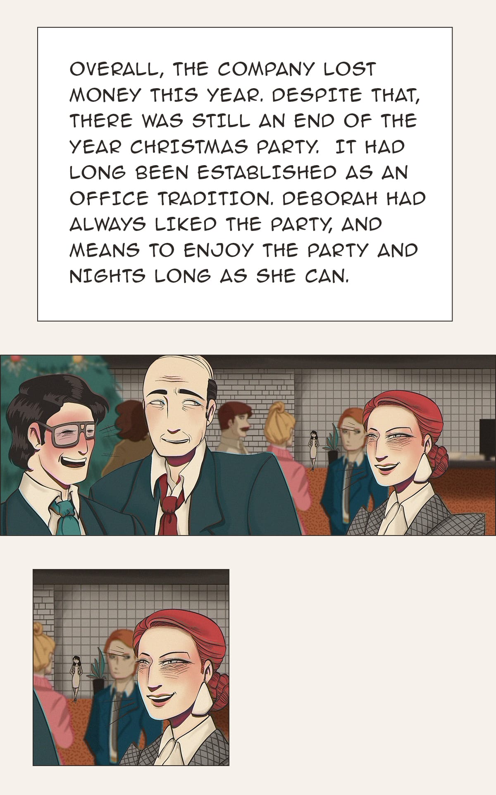
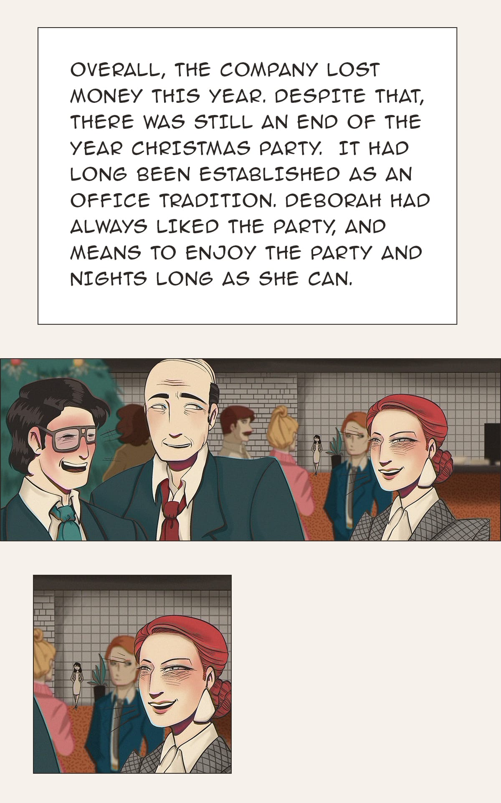
 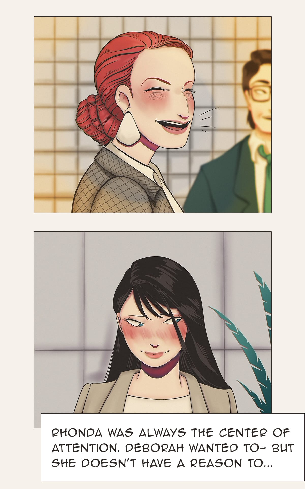
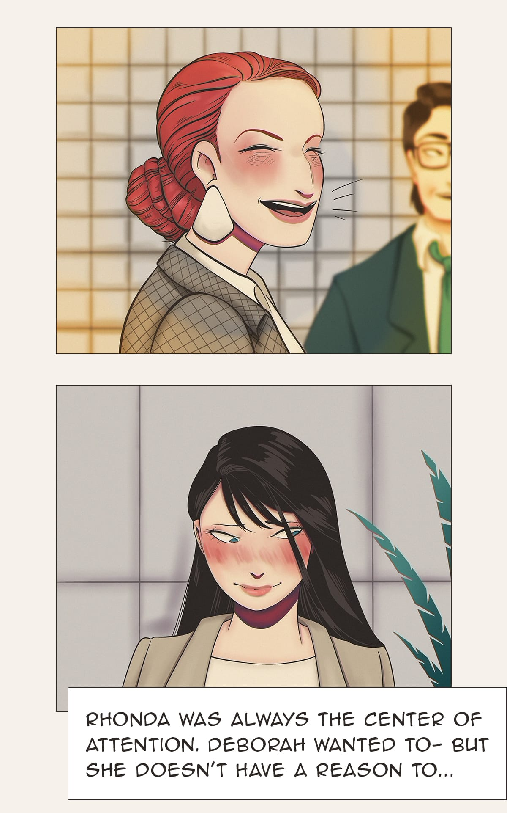
 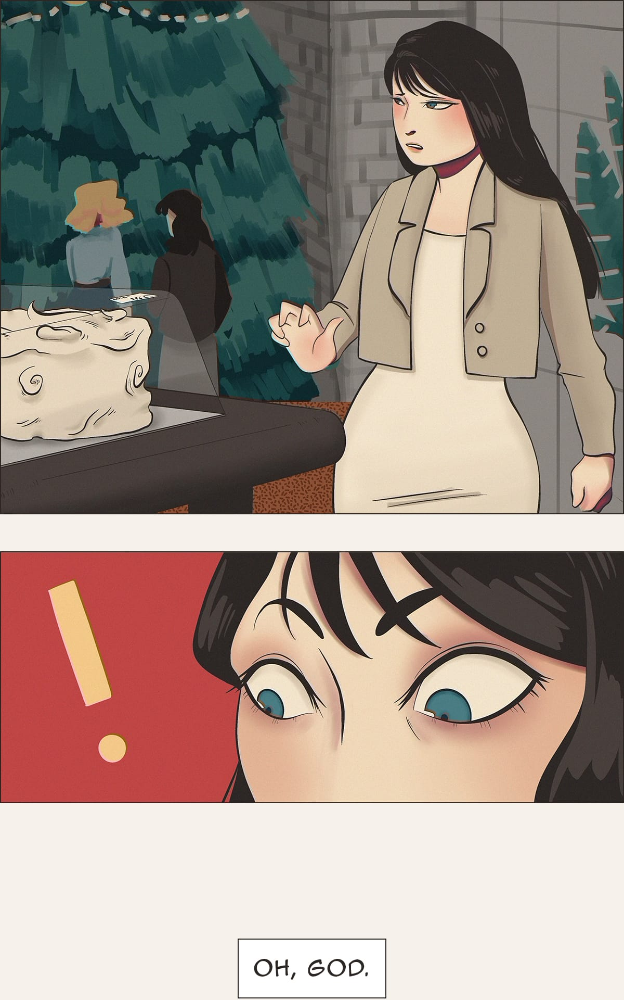
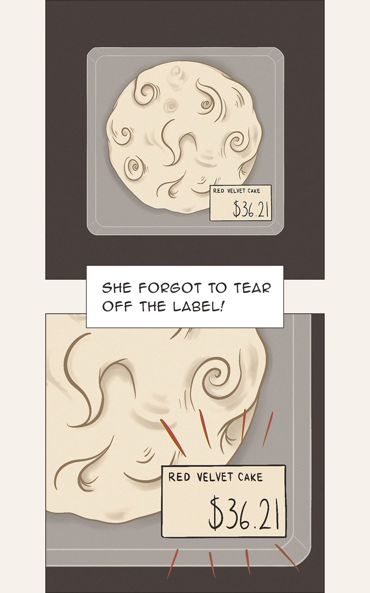
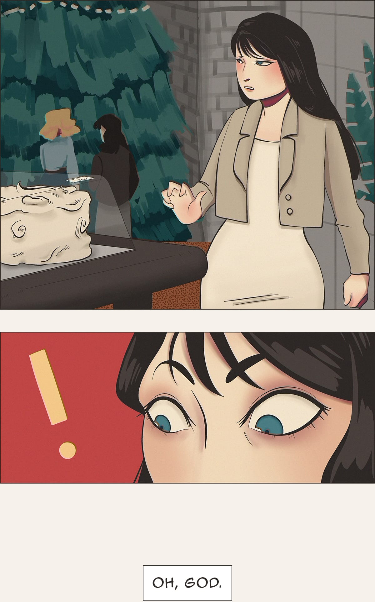
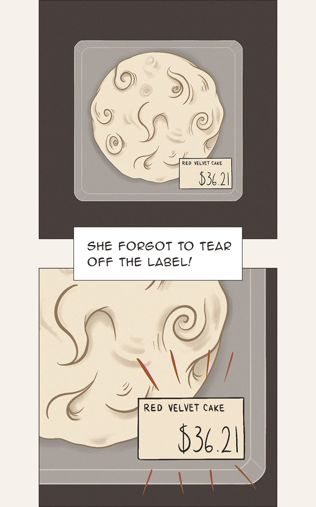

 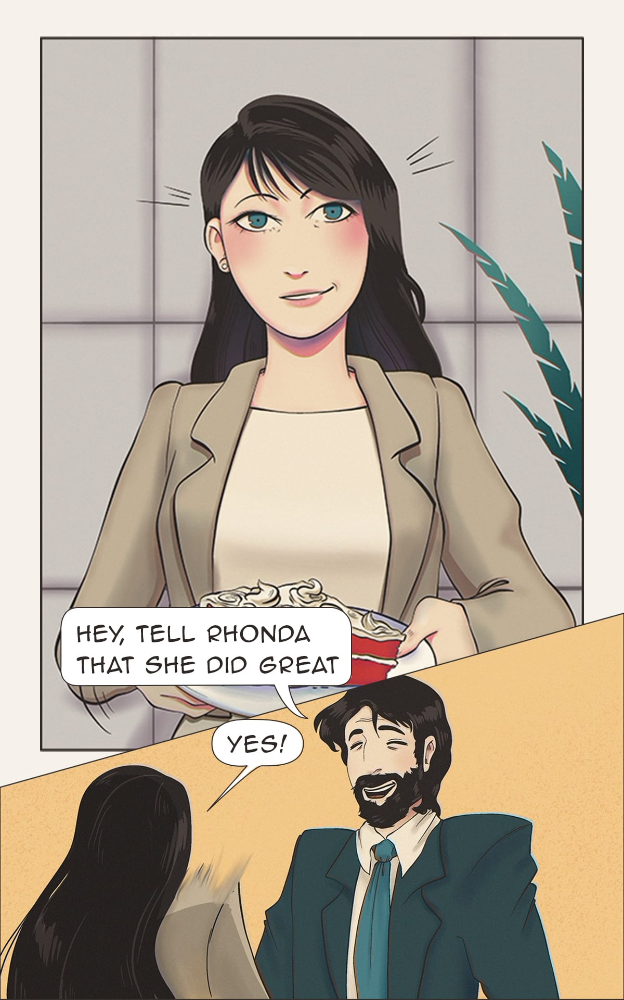
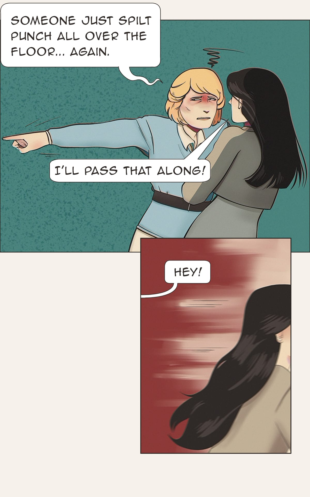
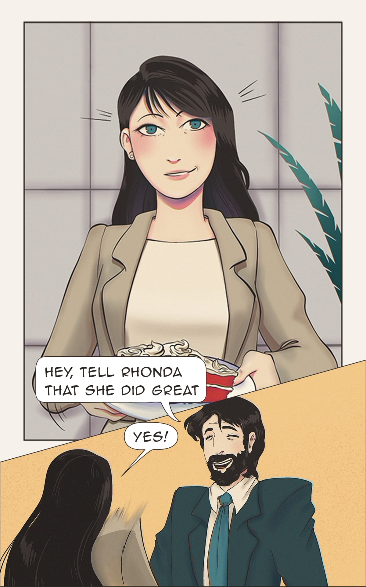
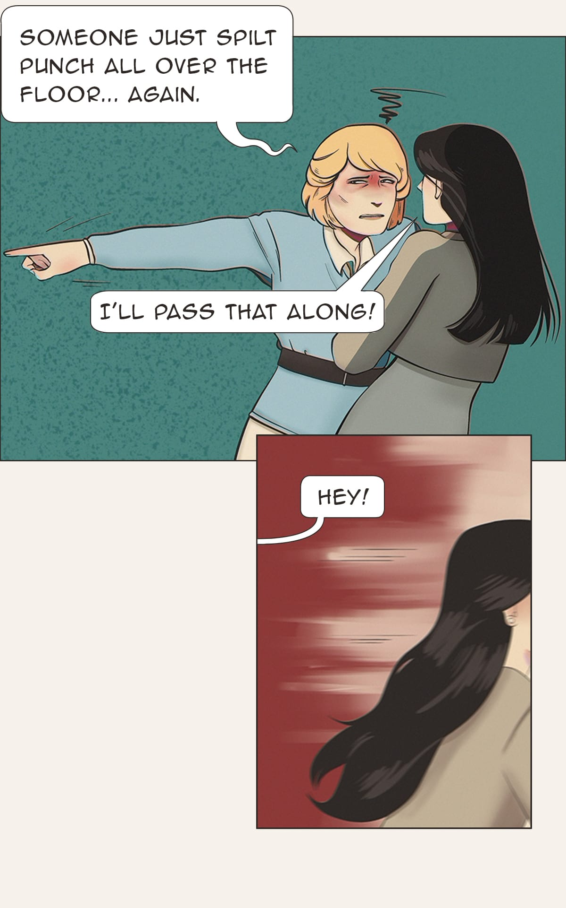


Comic (Under Construction)